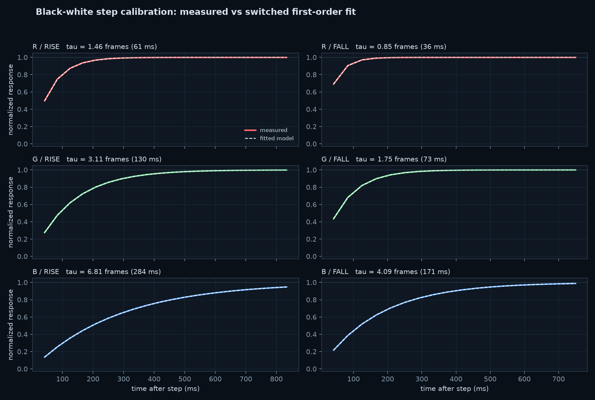
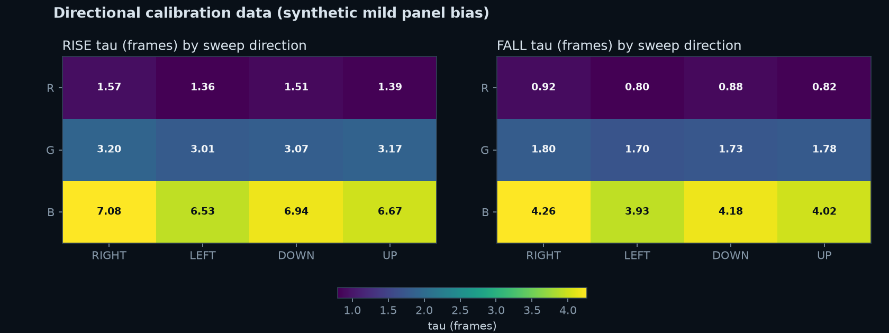
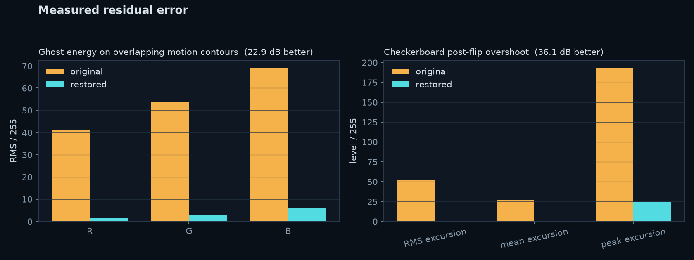
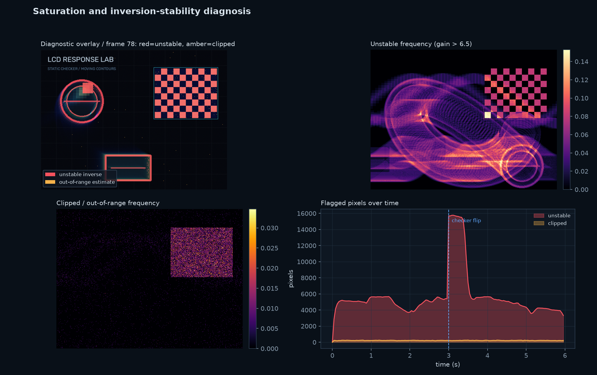

旧掌机屏幕的
拖影复原实验
用黑白阶跃片估计 R/G/B 三个通道各自的上升与下降时间常数，再把同屏演示片逐帧反演。对比视图、方向校准数据、残影与过冲指标都在同一页。
方法
模型是非对称切换一阶系统：误差为正时用上升系数，为负时用下降系数；反演同时保留局部增益与越界状态。
全屏黑白阶跃覆盖 rise/fall，四个方向的亮带扫掠产生方向校准数据。每个通道分别做最小二乘拟合。
由相邻观测帧的符号选择上升或下降分支，反算源像素。反演增益 1/α 超过 6.5 时记为不稳定。
在运动轮廓重叠带测残影能量；在静止棋盘翻转后测越过目标平台的过冲；越界估计单独着色。
原片 / 复原片 / 同步放大
四个画面共用时间轴。下方 3× 放大窗口会自动跟随运动圆形轮廓；空格播放/暂停，左右方向键微调。
逐通道阶跃校准
全局拟合使用全部 190 帧校准数据；方向表来自左→右、右→左、上→下、下→上四段扫掠，时间单位为视频帧。


| 通道 | α rise | α fall | τ rise (帧) | τ fall (帧) | τ rise (ms) | τ fall (ms) | 反演增益 |
|---|---|---|---|---|---|---|---|
| R | 0.4968 | 0.6906 | 1.46 | 0.85 | 61 | 36 | 2.01x |
| G | 0.2750 | 0.4349 | 3.11 | 1.75 | 130 | 73 | 3.64x |
| B | 0.1366 | 0.2167 | 6.81 | 4.09 | 284 | 171 | 7.32x |
展开四方向 × R/G/B × rise/fall 的 24 组校准记录
| 方向 | 通道 | 过渡 | τ (帧) | α | 样本数 | 拟合 RMSE |
|---|---|---|---|---|---|---|
| right | R | rise | 1.57 | 0.4715 | 901,080 | 0.00358 |
| right | R | fall | 0.92 | 0.6636 | 669,581 | 0.00331 |
| left | R | rise | 1.36 | 0.5194 | 901,018 | 0.00351 |
| left | R | fall | 0.80 | 0.7139 | 611,733 | 0.00324 |
| down | R | rise | 1.51 | 0.4843 | 901,440 | 0.00355 |
| down | R | fall | 0.88 | 0.6774 | 646,153 | 0.00331 |
| up | R | rise | 1.39 | 0.5120 | 901,421 | 0.00352 |
| up | R | fall | 0.82 | 0.7064 | 618,409 | 0.00325 |
| right | G | rise | 3.20 | 0.2685 | 901,080 | 0.00389 |
| right | G | fall | 1.80 | 0.4258 | 1,078,713 | 0.00366 |
| left | G | rise | 3.01 | 0.2826 | 901,080 | 0.00387 |
| left | G | fall | 1.70 | 0.4452 | 1,089,832 | 0.00362 |
| down | G | rise | 3.07 | 0.2777 | 901,440 | 0.00388 |
| down | G | fall | 1.73 | 0.4386 | 1,108,826 | 0.00362 |
| up | G | rise | 3.17 | 0.2708 | 901,440 | 0.00390 |
| up | G | fall | 1.78 | 0.4290 | 1,123,128 | 0.00364 |
| right | B | rise | 7.08 | 0.1317 | 901,080 | 0.00418 |
| right | B | fall | 4.26 | 0.2092 | 1,561,321 | 0.00408 |
| left | B | rise | 6.53 | 0.1419 | 901,080 | 0.00418 |
| left | B | fall | 3.93 | 0.2245 | 1,874,882 | 0.00404 |
| down | B | rise | 6.94 | 0.1342 | 901,440 | 0.00419 |
| down | B | fall | 4.18 | 0.2128 | 2,015,260 | 0.00406 |
| up | B | rise | 6.67 | 0.1392 | 901,440 | 0.00418 |
| up | B | fall | 4.02 | 0.2205 | 1,875,243 | 0.00405 |
残影与过冲测量
运动带用连续两帧膨胀轮廓的交集定义；棋盘指标只在第 72 帧相位翻转后的 18 帧内计算，并排除运动物体遮挡。

重叠运动轮廓 / Ghost energy
原片 55.89 → 复原 3.98 RMS/255。逐通道改善：R 41.0→1.5，G 54.0→2.8，B 69.1→6.1。
静止棋盘 / Overshoot
原片 RMS 越界 51.97 → 复原 0.81。受影响像素比例 47.7% → 2.9%，峰值为 193.5 → 24.0/255。
诊断图
红色表示该处反演局部增益超过 6.5，橙色表示反算出的源像素越过 [0,1] 后被截断。两者都保留在逐帧掩膜中，而不是静默修复。

不稳定反推
占全图像素时间样本 3.29%。主要出现在蓝通道慢速边沿：1/α ≈ 7.3×，会把采集噪声同步放大。
饱和 / 越界
占 0.13%。这些位置无法在不越过物理亮度范围的前提下精确反演，输出采用截断值，同时保留橙色标记。
结果文件
报告为纯静态页面，视频与图片均使用相对路径，可以直接打开或通过本地 HTTP 服务查看。